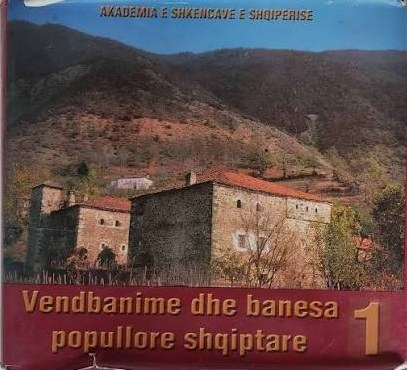

Vendbanime dhe Banesa Popullore Shqiptare, Vëll. I
P. Thomo redaktor përgjegjës; bashkautorë A. Muka, E. Riza · 2004 · Vendbanime dhe banesa fshatare
Vëllimi i parë i korpusit «Trashëgimi kulturor i popullit shqiptar», botuar nën kujdesin e Akademisë së Shkencave, me Pirro Thomon redaktor përgjegjës.
- Faqe
- 475
- Viti
- 2004
- Botues
- Akademia e Shkencave e Shqipërisë
- Gjuha
- Shqip